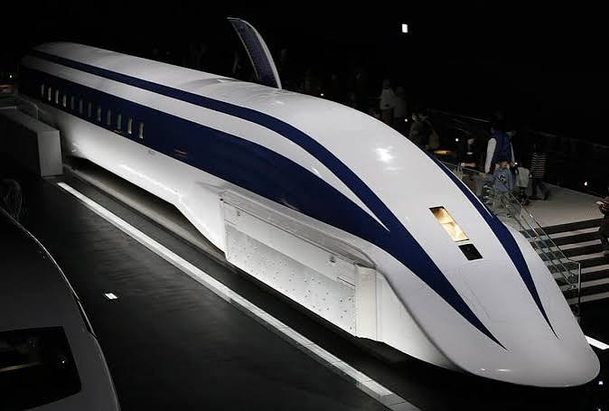
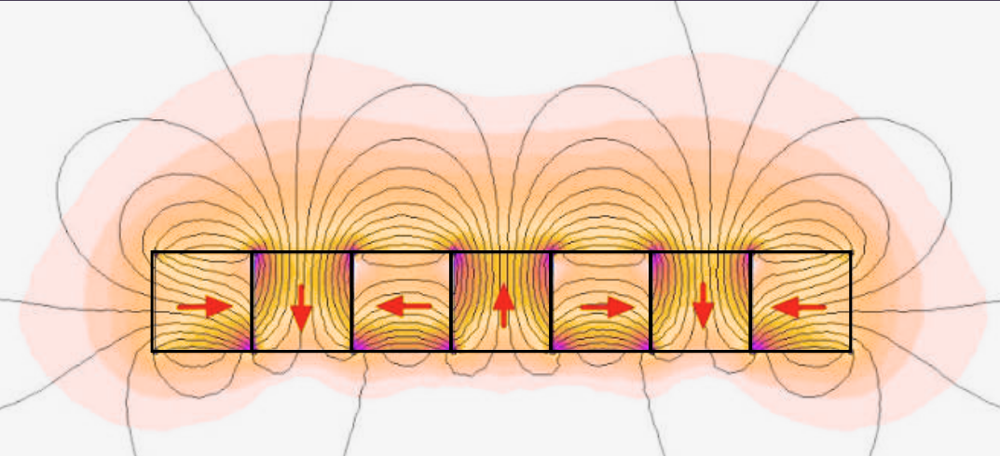
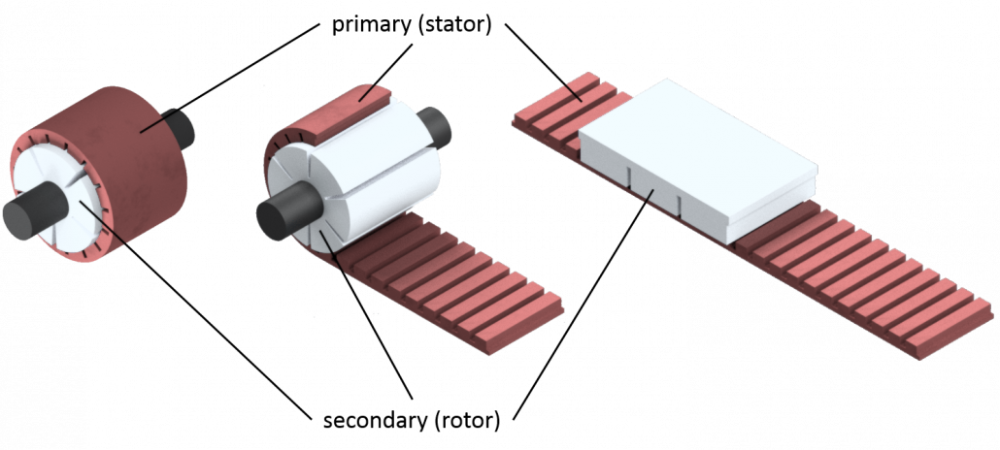
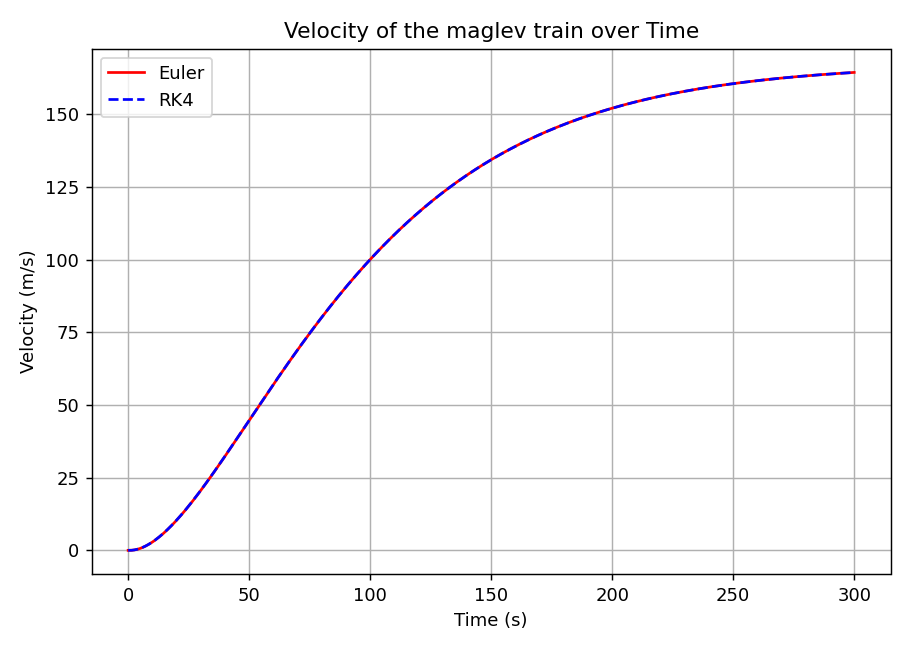
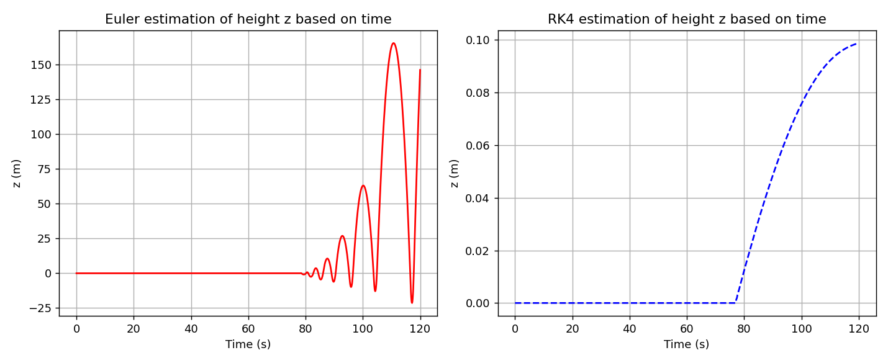
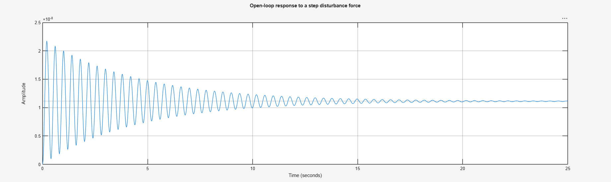
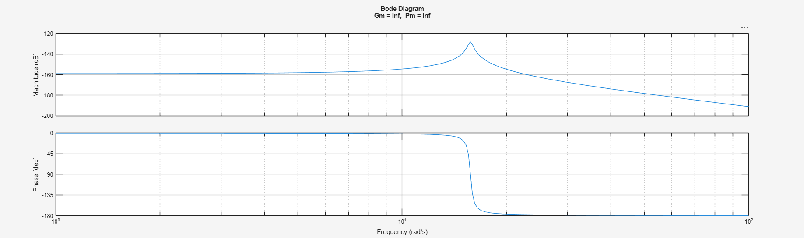
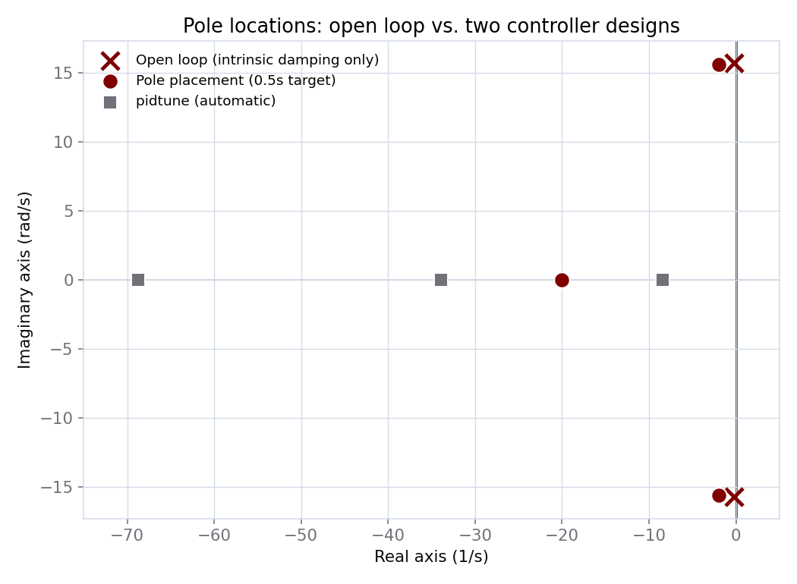
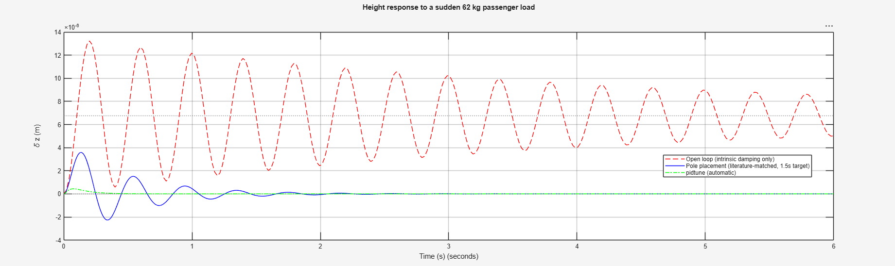

Modeling & Controlling a Maglev Train
This project has two connected parts. First, a high school Extended Essay deriving the differential equations governing EDS maglev levitation and propulsion from first principles, using the Lorentz force law, the London equations, and a Halbach array's Fourier field. Second, a MATLAB feedback-control extension that linearizes that same physics to design and verify a PID controller, closing the loop the original essay left open.
Modeling the Meissner Effect with Differential Equations
Research Question: How can differential equations be used to model and evaluate magnetic levitation in EDS Maglev trains?

EDS (electrodynamic suspension) maglev trains use superconductive magnets to repel a magnetic track, allowing them to levitate. This repulsion becomes stronger at high speeds, according to Faraday's law. This project models velocity, levitation height, and load size for a train based on the Japanese L0 series Maglev (603 kph / 167.5 m/s top speed), then uses the model to derive real-world safety parameters: maximum passenger load and safe voltage-ramp rate.
The derivation manipulates fundamental electromagnetic equations, the Fourier series and Lorentz force law, and Newton's laws, using integration and differentiation to arrive at the ODEs (ordinary differential equations) that describe the train's behavior. After identifying key constants, Euler's Method and the Runge–Kutta (RK4) method are applied to numerically approximate these ODEs, and their accuracy is compared.
Numerical Methods
Euler's Method
Euler's Method estimates the next point on a curve by taking the current value and adding the local slope times a small step:
This is inaccurate at larger step sizes, since errors compound with each iteration.
Runge–Kutta (RK4)
RK4 incorporates the slope over the whole interval rather than just the starting point, using four weighted slope estimates (k₁–k₄) per step:
The Meissner Effect & Levitation Force
EDS is a type of levitation based on the Meissner effect, where a superconductor forces the magnetic field inside it to zero, creating a surface current that repels the field.
The Lorentz Force Law
The Halbach Array
The magnets are arranged in a Halbach array (Fig. 3, below), which concentrates the field on one side rather than splitting it evenly between both faces. This periodic field is approximated with a Fourier series:

The Second London Equation
The second London equation relates superconducting current density to the field:
Substituting Ampère's law ($J_s = \nabla\times B/\mu_0$) in for $J$ gives:
Applying the vector identity $\nabla\times\nabla\times F = \nabla(\nabla\cdot F) - \nabla^2F$, and using the fact that $\nabla\cdot B = 0$ for any magnetic field, the left side collapses to just $-\nabla^2B$. Substituting in the London penetration depth definition, $\lambda_L^2 = m/(\mu_0n_se^2)$, and restricting to the $z'$ direction (depth into the superconductor) turns the del operator into an ordinary second derivative:
This is a second-order linear ODE. Assuming an exponential solution $B(z') = B_0e^{rz'}$ and substituting back in gives the characteristic equation $r^2 = 1/\lambda_L^2$, so $r = \pm1/\lambda_L$. Since the field must decay, not grow, with depth, only the negative root is physical:
From Field to Current: London Penetration Depth
The magnetic vector potential $A$ relates to $B$ by $B(z') = dA/dz'$. Integrating the decay equation (with the constant of integration set to 0, since the field must be able to fully decay to zero) gives $A = -\lambda_LB_0e^{-z'/\lambda_L}$. Substituting this into the London current relation $J = -A/(\mu_0\lambda_L^2)$ gives the current at any depth:
Integrating this over the superconductor's depth $d_{sc}$ gives the overall surface current:
The London penetration depth $\lambda$ itself depends on train velocity: it transitions from the classic "skin effect" at low speed to the London depth at high speed:
Combining $J$ and $B$ (cross product simplifies to multiplication since the two are perpendicular), applying Parseval's theorem to collapse the Fourier integral, and factoring out the effective working area $A_{area}$ gives the final repulsion force:
Applying Newton's second law with gravity gives the levitation ODE:
Linear Synchronous Motor

Kirchhoff's Voltage Law & Motor Current
The motor's forward thrust comes from the Lorentz law applied to the motor winding, $F_{motor}(t) = k_tI(t)$. Solving the motor's Kirchhoff-voltage equation for current, using an integrating factor, and substituting back in gives:
Total drag combines aerodynamic drag and eddy (magnetic damping) drag:
Modeling voltage as a smooth exponential ramp $V(t) = V_{max}(1-e^{-t/r})$ and applying Newton's second law gives the full velocity ODE, driven by $F_{motor}(t) - F_{drag}(t)$ divided by train mass $m$.
Constants
Values pulled directly from the essay's appendix: real specs modeled on the L0 series (Chuo Shinkansen line), plus Fourier coefficients fit to a 5-harmonic Halbach array.
| Symbol | Meaning | Value |
|---|---|---|
| m | Train mass | 362,874 kg |
| Lm | Motor phase inductance | 3.3 H |
| ρ | Air density | 1.225 kg/m³ |
| Af | Frontal area | 8.9 m² |
| Cd | Drag coefficient | 0.25 |
| C1 | Eddy drag coefficient | 29 N |
| Vmax | Maximum drive voltage | 20,000 V |
| Symbol | Meaning | Value |
|---|---|---|
| d | Superconductor depth | 0.01 m |
| τ | Halbach array period length | 0.5 m |
| μ₀ | Permeability of free space | 4π × 10⁻⁷ H/m |
| σ | Conductivity of material | 10⁵ S/m |
| λL | London penetration depth | 1 × 10⁻⁷ m |
| v₀ | Eddy-current onset speed | 30 m/s |
| n | kn | An | Bn |
|---|---|---|---|
| 1 | 12.566 | 0 | 1.2 |
| 2 | 25.133 | 0.01 | 0.3 |
| 3 | 37.699 | 0.005 | 0.1 |
| 4 | 50.265 | 0.002 | 0.05 |
| 5 | 62.832 | 0.001 | 0.0245 |
Solving for the Unknown Constants
Several constants in these equations ($k_t$, $A_{area}$, $v_0$, $n$) aren't published anywhere. They have to be inferred by forcing the model to match known real-world behavior of the L0. This was the part of the project that felt the least like "plugging into a formula" and the most like actual engineering judgment.
Motor Constant & Resistance ($k$, $R_m$)
Assuming an ideal motor ($k_t \approx k_e \approx k$, from conservation of energy, since electrical power in equals mechanical power out), the steady-state force balance $F_{motor}(v_{top}) = F_{drag}(v_{top})$ at the L0's real top speed (167.5 m/s) gives one equation with two unknowns, $k$ and $R_m$, underdetermined on its own. The second condition comes from the L0's real spin-up time: the real train reaches top speed in about 4 minutes, so $R_m$ was tuned until the simulated spin-up time matched that window, and $k$ was solved from the resulting quadratic.
This pins down $R_m \approx 2.3\ \Omega$ and $k \approx 114.22$, which satisfy the steady-state balance to 8 significant figures ($F_{motor}(167.5) = F_{drag}(167.5) = 43{,}092.908\ N$ on both sides) and reproduce the correct spin-up time: two independent real-world checks, not just an algebraic fit.
Effective Working Area ($A_{area}$)
At the point of maximum levitation, net vertical force is zero: $F_{Repulsion} = mg$. Plugging the train's mass into the repulsion equation and solving for the one unknown (area) gives:
Skin-Effect Decay Rate ($n$)
Levitation visibly starts around 30 m/s, so $v_0 = 30$, solving for the penetration depth at that speed using the same zero-net-force condition gives $n \approx 1.001$ at onset, but that alone under-constrains $n$. A second condition was needed: at the train's top speed (168 m/s), the skin depth should have shrunk to sub-nanometer scale, essentially zero, since the London depth itself is only ~100 nm. Setting up that inequality and solving:
So $n=11$ is the smallest integer satisfying both the onset behavior and the high-speed limit: a constant derived from bracketing two physical regimes rather than fit to a single data point.
Results
Velocity: Euler vs. RK4
Both methods track almost identically here, since velocity changes smoothly with no sharp local curvature for Euler's method to mishandle. The curve plateaus near 167.5 m/s within the L0's real ~4-minute spin-up window.

Levitation Height: Euler vs. RK4
This is the more interesting case. Euler's method uses the acceleration at a single point per step, which over-expresses the slight oscillation from the counteracting repulsion/gravity forces, visibly diverging. RK4 averages the slope across the interval, canceling the oscillation out and settling smoothly at ≈0.1 m, matching the real L0's levitation gap.

This gap in accuracy is global error: RK4's error scales with step size to the 4th power, versus 1st power for Euler, so RK4 stays accurate at step sizes where Euler visibly breaks down.
Discussion & Application
The model surfaces two real safety parameters for the train:
- Voltage ramp rate: the maximum passenger-safe acceleration is ~1.0 m/s². Solving for the ramp constant $r$ that keeps acceleration under this limit gives $r \geq 85$.
- Load limit: higher mass lowers the levitation height. At the moderate-danger threshold (9 cm), the overall mass limit is 460,000 kg. With the train itself at 360,000 kg, that leaves 100,000 kg for passengers and storage.
MATLAB Extension: A Controller for Reducing Disturbances
The essay above models the open-loop physics of levitation: what force exists at a given height and speed. It never asks what happens once the train is disturbed while cruising, or whether that disturbance settles down or rings forever. This extension answers that directly: using MATLAB to linearize the levitation force, analyze its stability, and design a feedback controller, closing the loop the original model left open.
It also resolves a specific limitation the essay itself found. Section 4.4 showed that a heavier load permanently lowers the levitation height, with no way to correct it. The controller built here fixes exactly that, using integral feedback to drive that steady-state error back to zero.
The Linearized Plant
Starting from the essay's own $F_{Repulsion}(z,v)$, the force is linearized around the train's real equilibrium height and cruise speed, giving a simple spring-like equation. The essay's own equations contain no damping term at all. Real EDS systems do (vertical eddy-current damping), so a literature-sourced value was added: an intrinsic decay time of 4.5 seconds, from D. Rote, Passive Damping in Repulsive-Force-Based Maglev Systems, Argonne National Laboratory Report ANL/ES/RP-106247 (2001). Every derived quantity (equilibrium height, stiffness, natural frequency) is computed directly from the essay's own constants inside the MATLAB script itself, and cross-checked two independent ways: a numerical finite-difference and a symbolic Taylor expansion. The resulting differential equation is converted into a transfer function through a symbolically-verified Laplace transform, not asserted by hand.

Bode Plot & Stability Margins

The open-loop gain and phase margins come back infinite. Not a bug, but a real finding, confirmed directly in the plot's own title (Gm = Inf, Pm = Inf). The plant is so stiff that its gain never approaches unity at any frequency, so there's no crossover point to measure a margin against. The one thing the plot does show clearly is the resonance itself, visible as the sharp spike at 2.5 Hz.
Controller Design
Two independent PID designs were built and cross-checked against each other:
- Pole placement: a fully transparent design. Target closed-loop poles are chosen directly (a 0.5s decay time), and the exact gains needed to place the poles there are solved by matching characteristic-polynomial coefficients.
pidtune(): MATLAB's automatic tuner, used purely as a cross-check against the hand-designed version.

The two designs diverge in an interesting way. Pole placement keeps essentially the same oscillation frequency as the open-loop plant and simply adds damping, matching how real EDS dampers actually behave. pidtune()'s automatic design eliminates the oscillation altogether, landing on three real poles: a more aggressive philosophy, but one with no specific literature target behind its exact numbers.
Results

The open-loop system rings for the full 6-second window, barely decaying. Both controllers settle it out. Pole placement settles within its 0.5s target, pidtune() considerably faster still.
| Design | Decay time |
|---|---|
| Open loop | 4.500 s |
| Pole placement | 0.500 s |
| pidtune | 0.119 s |
| Design | Offset |
|---|---|
| Open loop | 0.00676 mm (permanent) |
| Pole placement | 0 mm |
| pidtune | 0 mm |
That last table is the direct payoff: the open loop's offset is small in absolute terms here, but it is permanent, exactly the mechanism behind the essay's own Section 4.4 finding that heavier loads lower the levitation height with no way to recover it. Both controllers drive that offset to exactly zero, because the integral term in each is specifically designed to eliminate steady-state error to a constant disturbance.
Conclusion
The original essay showed that differential equations could model EDS levitation successfully. But a model that only describes equilibrium says nothing about what happens when that equilibrium is disturbed. This extension closes that gap: linearizing the essay's own force equation, adding a literature-grounded damping term the original derivation never included, and designing two independently-verified controllers around it.
The result is a small but complete demonstration of classical feedback control: pole placement and automatic tuning converging on different but comparably valid designs, and, more importantly, a direct fix for a real limitation the original essay identified in its own conclusion. What started as an open-loop physics model now has a closed-loop answer to the question it originally left open.